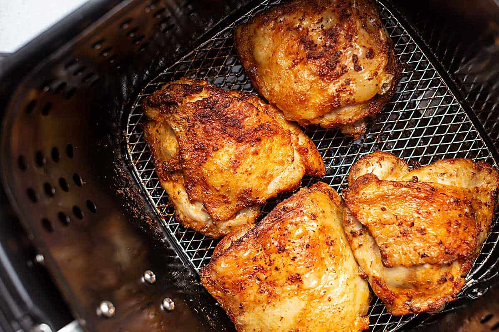

Air Fryer Chicken Thighs and Potatoes

Description
This is a very easy recipe if you are not in the mood for cooking and want a quick meal. Since
air fryers are ubiquitous these days, it makes sense to have this recipe. This recipe requires
very little preparation and uses simple over the counter ingredients.
Ingredients
- 1 table spoon ground paprila
- 1 teaspoon granulated garlic
- 1 teaspoon onion powder
- 1 teaspoon Greek seasoning
- 1 teaspoon Gota Sazonador Total
- 2 pounds bone0in, skin on chicken thighs
- 1/4 cup water
- 6 tablespoons olive oil, divided
- 1 table spoon vinegar
- salt and ground black pepper to taste
- 1/2 pound baby red potatoes, cut into 1-inch cubes
Steps
-
Mix paprika, garlic, onion powder, Greek seasoning, sazonador total, salt, and pepper in a small bowl.
Reserve 1 tablespoon seasoning in a small bowl; cover and set aside until needed for the potatoes.
-
Place remaining seasoning in a 1-gallon resealable bag with water, 4 tablespoons olive oil, and vinegar.
Add chicken thighs; massage to coat with seasoning, squeeze out excess air, and seal the bag. Marinate
in the refrigerator for 8 hours or overnight.
-
Preheat the air fryer to 400 degrees F (200 degrees C) for 5 minutes.
-
Meanwhile, place 1 tablespoon reserved seasoning in a small bowl with remaining 2 tablespoons olive oil;
stir to combine. Toss potatoes in and stir until well coated. Combine potatoes and thighs in the air fryer basket.
-
Cook in the preheated air fryer until potatoes are tender and chicken is no longer pink at the bone and the juices
run clear, about 28 minutes. An instant-read thermometer inserted near the bone should read 165 degrees F (74 degrees C).